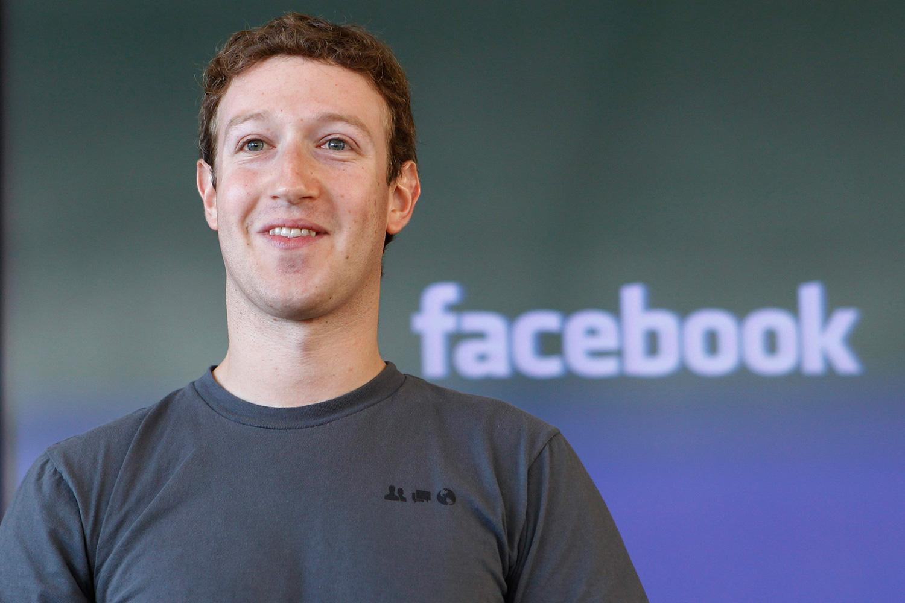

Au début, L’idée c’était comme ça :
La naissance de la planète virtuelle bleue « the facebook ». a été commencé par un projet d’étude, projet de vie, de défi,
pour Mark Zuckerberg, dans un contexte de concurrence par des autres étudiants « les frères Cameron et Tyler Winklevoss »,
le projet intitulé « facemash », pour objectif de rassemblé ses collègues à l’université Harvard dans un monde virtuel uni et unique.
Son lancement officiel :
Le nouveau titre du projet « facebook » en 4 février 2004. Était essentiellement pour déjouer la situation d’accusation du (plagiat),
par les porteurs d’idée en commun les Winklevoss avec mark. Surtout lors de récolte d’un chiffre d’utilisation une 50% des étudiants
d’Harvard.
-Histoire de facebook
Sa révolution :
Mark Zuckerberg a lancé facebook dans un large horizon, après la fin d’étude académique à l’aide d’un collaborateur financier
Peter thiel qui a investi une somme risquée de 50 millions de dollars au compte de mark.
L’exploit se faisait en quelque mois, dans la mesure où il a trahi le monde par des modes d’emploi des méthodes simple, portatives
d’une valeur symbolique intime. S’agit il du « j’aime » et « partager » . ainsi un espace pour s’exprimer en face d’un large publique choisi par les facebokeur, les fans, les amis. dans un propre monde appelé la page facebook .